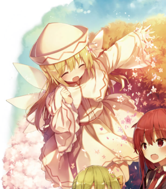
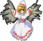

- Welcome to Touhou Wiki!
- Please register to edit. For assistance, check in with our Discord server or IRC channel.
Lily White
| リリーホワイト Lily White ɾiɾiː ho̞ɰᵝa̠ito̞ (♫) Lilywhite | |
|---|---|
|
 Illustration of Lily White in Strange Creators of Outer World Fairy Herald of SpringMore Character Titles | |
| Species | |
| Abilities |
Announcing that spring has come |
| Occupation |
Herald of spring |
| Location |
Wherever spring is starting to arrive, unknown |
Appearances | |
| Official Games | |
| |
| Print Works | |
| |
Lily White (リリーホワイト Rirī Howaito) is a fairy that heralds the coming of spring. She first appeared as the 4th stage midboss of Perfect Cherry Blossom, then as a special generic enemy in Phantasmagoria of Flower View and a common midboss in Fairy Wars, each time announcing spring has arrived. She returned as the stage 3 midboss of Hidden Star in Four Seasons.
General Information[edit]
Ability[edit]
- Announcing that spring has come
Lily is able to announce that spring has come. Although it's unclear what this ability entails concretely, Gensokyo's residents are made to feel the actual feeling of spring's arrival which makes her very popular with florists. It seems like she is able to provide impetus for flowers and other plants to bloom. In chapter 8 of Strange and Bright Nature Deity, there was a depiction of the place she passed by instantly becaming spring.
She can still attack with said ability, but it's mostly due to excitement about the spring as she's not very aggressive. While it's advised not to stay around when she attacks, she has a good relation with humans. She doesn't seem willing to attack even if they catch her. Likewise, humans don't see her as a threat, but rather as a symbol of good luck.
Background Information[edit]
Design[edit]
In Perfect Cherry Blossom, Phantasmagoria of Flower View and Fairy Wars, Lily has green eyes, long blond hair and a pair of white feathered wings. In most stages, her hat and dress are white, with a red wave pattern outlining the edges.
A full portrait of Lily can be seen in Perfect Memento in Strict Sense. There, it's shown that she wears a caplet.
In the stage of Eiki Shiki, Yamaxanadu of Phantasmagoria of Flower View, her hat and dress are black, with a red wave pattern outlining the edges. The wave pattern is yellow in Fairy Wars.
In Hidden Star in Four Seasons, Lily's hat, capelet and sleeves are now plain white, lacking the red wave pattern seen before. The wave pattern on her skirt has been replaced by a pink cherry blossom design, and her skirt now has a pink trim on the bottom. Her wings are bright purple in color.
Lily's Appearances[edit]
Games[edit]
- Perfect Cherry Blossom
- Main article: Perfect Cherry Blossom Story
In the middle of stage 4 in Perfect Cherry Blossom, Lily only wanted to announce spring with danmaku.
- Phantasmagoria of Flower View
- Main article: Phantasmagoria of Flower View Story
During Phantasmagoria of Flower View, Lily reappears many times to announce spring, being a special type of general enemy. She'll randomly appear on the screen if a fight has gone on for a long time, appearing on both players' fields simultaneously. It seems her idea of announcing spring is via a dense cloud of danmaku thrown at the player at exactly the worst moment before she leaves, but at least she's trying to do her job the best she can think of. An EX Attacks appears if she's defeated and she will re-appear. Even ZUN says this is "annoying".
- Hidden Star in Four Seasons
- Main article: Hidden Star in Four Seasons
Lily appears as a Stage 3 midboss in Hidden Star in Four Seasons
Spin-offs[edit]
- Fairy Wars
- Main article: Fairy Wars/Story
Other than announcing spring as a common midboss shooting danmaku at Cirno, Lily White doesn't have much to tell or do. She will also dress in black.
- Hopeless Masquerade
Lily made a background cameo appearance in Hopeless Masquerade on the Hall of Dreams' Great Mausoleum, Hall of Dreams' Great Mausoleum and Youkai Tanuki Forest stage. On all stages, she is seen floating and cheering.
Literature[edit]
- Strange and Bright Nature Deity
- Main article: Strange and Bright Nature Deity/Lily White
In Strange and Bright Nature Deity, she's credited with the power to bring spring to an area the instant she passes by.
"Lily Black"[edit]
In Phantasmagoria of Flower View, Lily White appeared in the stage of Eiki Shiki, Yamaxanadu wearing a black costume instead of her usual white. Fans thought of this as a potentially different character and named her "Lily Black". Later on however, ZUN stated in a Kare Radio livestream (August 21, 2010) that the fairies and Lily White in Eiki's stage in Phantasmagoria of Flower View are all simply cosplaying as the yama, and specifically states that there was never an individual "Lily Black" to start with. This falls in line with other cosplaying fairies throughout the series, such as rabbit fairies in Imperishable Night and frog hat fairies in Mountain of Faith. This black costume also reappeared in Fairy Wars.
In Chapter 9 of Silent Sinner in Blue, both Lily White and "Lily Black" appeared in the same image. As the chapter was released before the above livestream (February 9, 2008), it's likely that Aki★Eda didn't know that those two were meant to be the same characters, and ZUN perhaps didn't notice that particular appearance, or let it pass because it was too late to make changes.
Gallery[edit]
Lily White in Strange and Bright Nature Deity

Lily White (with Aya) and Black (with Mystia) in the same image in Silent Sinner in Blue.
Lily with Tokiko in Forbidden Scrollery
Lily White in Wild and Horned Hermit
Lily White, Daiyousei and Koakuma in Strange Creators of Outer World
Spell Cards[edit]
| Name | Translated | Comments | Games | Stage | ||
|---|---|---|---|---|---|---|
| Total: 1 | ||||||
| 春苻「サプライズスプリング」 | Spring Sign "Surprise Spring" | HSiFS | St. 3: H/L | |||
Additional Information[edit]
- Beerko has been seen to also say "Spring has come!"
- In Hidden Star in Four Seasons, both Lily and Aunn Komano use the same background image while performing a Spell Card.
Fandom[edit]
Official Profiles[edit]
|  | ○春を運ぶ妖精
リリーホワイト ４面の中ボス、春が近づくと湧いて出る妖精。 主に、春が来たことを伝える程度の能力を持つ。 ゲーム中では一切の台詞は無く、スペルカードも使えない。 幾ら待てども春が来ない為、雲の上まで様子を見に行くと、そこはす |
Fairy Herald of Spring
Lily White Stage 4 midboss. She's a fairy who appears when the spring is approaching. Mainly, she possesses the ability of announcing that spring has come. Within the game, she uses neither words nor Spell Cards. She checked above the clouds since spring did not come no matter how much she waited. When she did so, spring had already arrived there. She only wanted to announce that spring had finally arrived above the clouds to humans in front of her, but to Reimu and her companions, it unfortunately appeared as a hostile attack to them. |
Official Sources[edit]
- 2003/08/17 Perfect Cherry Blossom - キャラ設定.txt (official profile)
- 2005/08/14 Phantasmagoria of Flower View - Manual
- 2006/12/27 Perfect Memento in Strict Sense - Fairy Herald of Spring: Lily White
- 200?/??/?? Strange and Bright Nature Deity - Chapter 8
- 2008/02/09 Silent Sinner in Blue - Chapter 9
- 2010/08/14 Fairy Wars - Various Stages; Extra stage
- 2018/10/01 Strange Creators of Outer World - Volume 6
| This page is part of Project Characters, a Touhou Wiki project that aims to write proper descriptions for all official characters of Touhou Project. Please keep the character page guidelines in mind when contributing. |